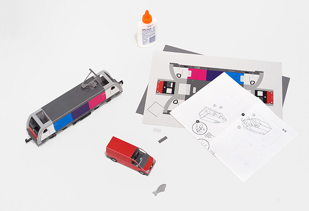
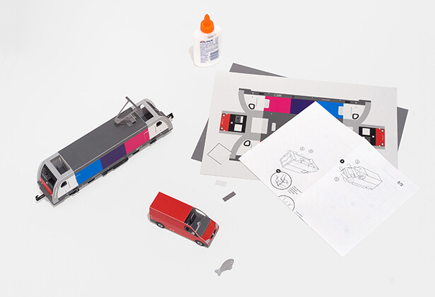
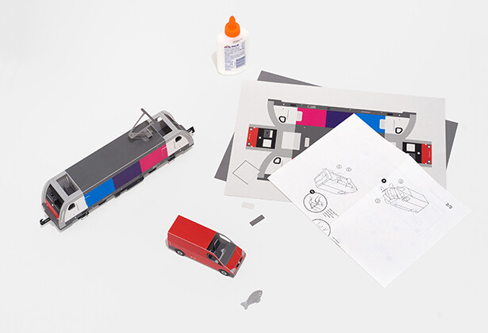
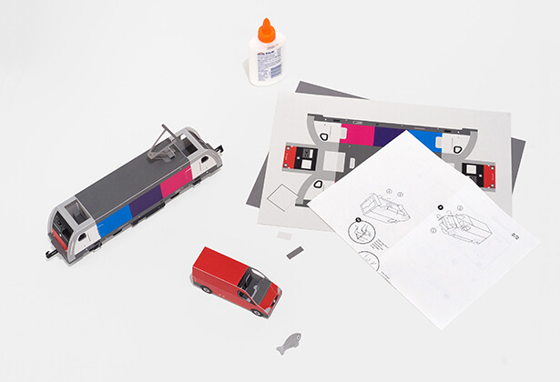
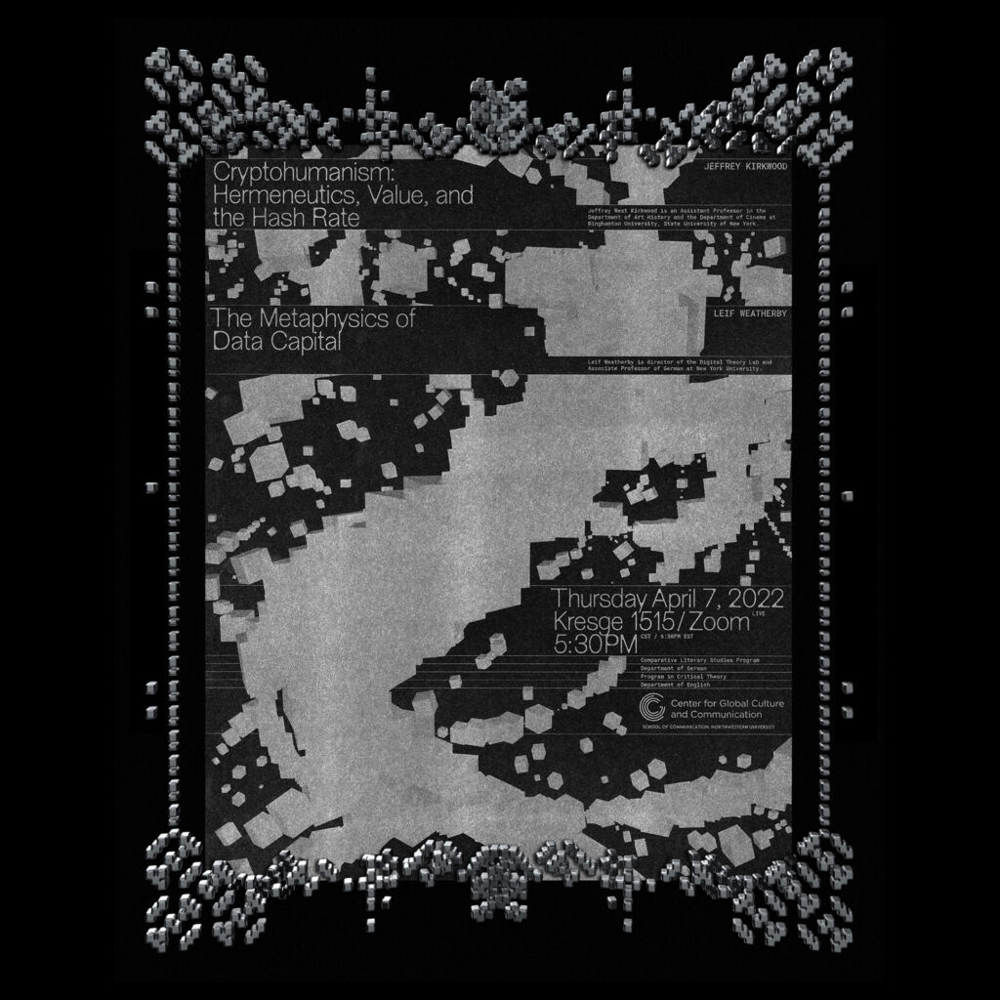
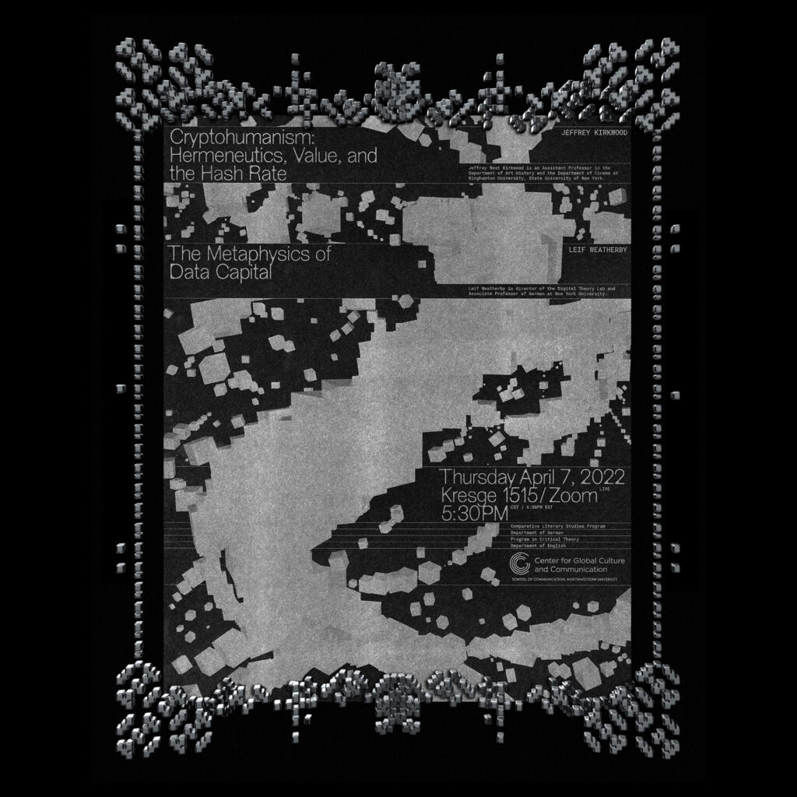
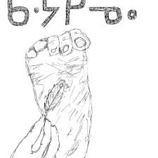
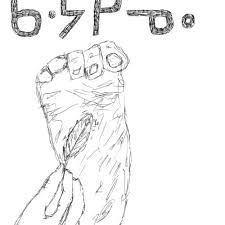

.jpg)
.jpg)
.jpg) 

 



 

.jpeg)
.jpg)
.jpg)
 

Anther Kiley is a designer, artist, and educator living and practicing in Providence, RI. He teaches in the graphic design department at RISD while maintaining a professional graphic design practice and a robust studio art practice. If that’s not enough he also runs Card Kits—a line of sustainable architectural children’s toys inspired by own childhood. His work explores the symbolic and poetic aspects of functionalist forms in the built environment through sculpture, photography, digital image making, and collage.
Visit Anther Kiley's WebsiteEmi Takahashi is an artist and graphic designer based in Toronto. Her practice involves experimenting with alternative & analog forms of image-making, glyph & type design, archival projects, and multidisciplinary collaborations. Michelle Kuan is a Chinese Canadian artist, designer, and writer based in Montréal. Working between social practice, digital arts, and experimental publishing, she explores novel ways of documenting personal and collective narratives, the power of somatic memory, and decolonial archival futures. Their research laden practices operate both individually and collectively to create a mix of client-based and self-initiated work such as their here-there stories project devoted to collecting the stories of the asian canadian diaspora.
Visit Emi Takahashi's WebsiteE Roon Kang operates Math Practice, an interdisciplinary design and research studio with interest in studying, evaluating, and criticizing everyday systems and their pursuit of efficiency. He is also a co-founder of 908A a research initiative and consultancy that focuses on constructing new design tools. E Roon is the Chair and Associate Professor of Graphic Design at California College of the Arts. Previously, he served as the director of BFA Communication Design at Parsons School of Design, from 2017 to 2020. He was appointed as TED Senior Fellow and worked as a research fellow at SENSEable City Laboratory of MIT.
Visit E Roon Kang's WebsiteAubin has done publications for numerous artists, organizations and art galleries in Winnipeg, Montréal and Ottawa, including Plug In ICA Close Encounters, the next 500 years, Terrance Houle, KC Adams, Carleton University Art Gallery, Thunder Bay Art Gallery, and Art Gallery of South Western Manitoba. Aubin is one of the founding members of the ITWÉ collective that is dedicated to research, creation, production and education of Aboriginal digital culture. Currently based in Montréal, QC, Sébastien Aubin is a proud member of the Opaskwayak Cree Nation in Manitoba.
Visit Sabastiran Aubin's Website